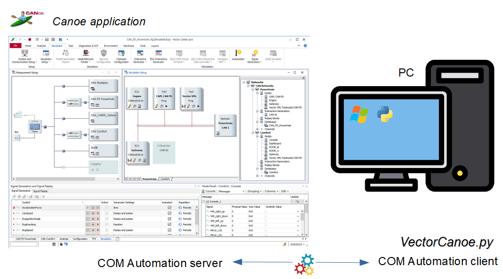
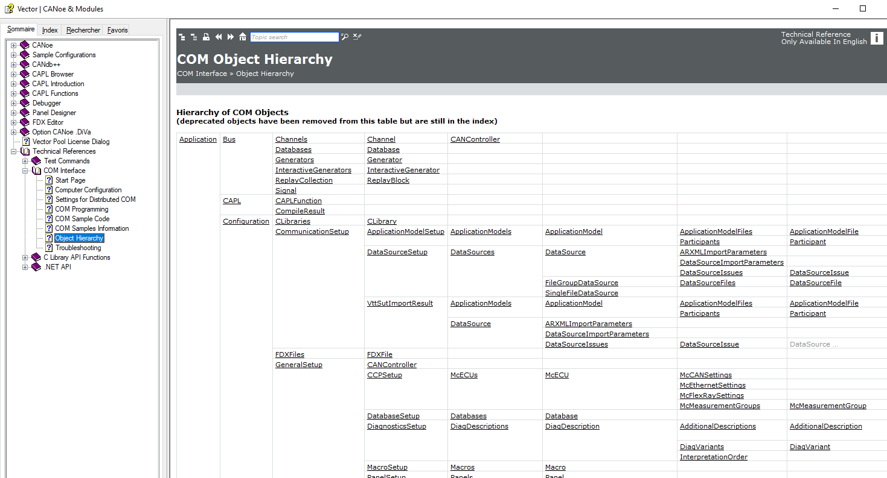
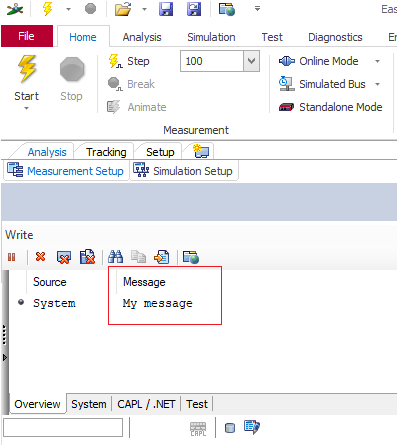
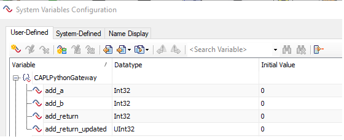
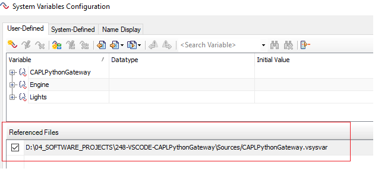
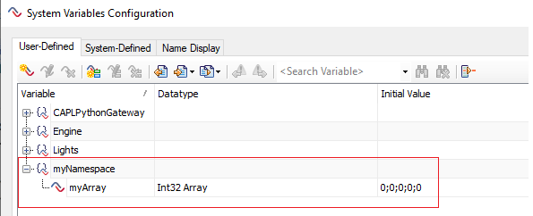
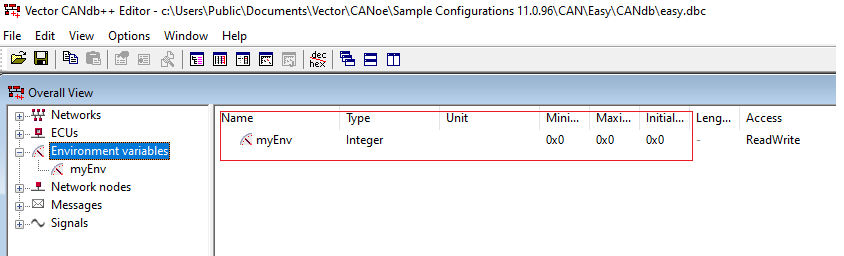

Tutorial
You'll learn how to get started using the VectorCanoe Python module

The VectorCanoe.py Python module is dedicated to the control of the CANoe application.
CANoe is a development and testing software tool from Vector informatick.
The CANoe automation is done via the win32com.client (COM automation) Python module.
This module can only be used on the Windows OS.
The module contains the following classes:
- Canoe Main class to control the CANoe application.
- EnvironmentVariable Class to access an environment variable
- SystemVariable Class to access a simple system variable
- SystemArrayVariable Class to access an array system variable
Requirements
- Vector CANoe application
- Python V3.9+ (Software Validation Python distribution)
- pywin32 Python package
Installing and importing the module
The module can be installed by copy in your working directory.
import sys
sys.path.append(".")
from VectorCanoe import *
User functions development
It is possible to develop user functions based on the CANoe COM object hierarchy.
The getApplication() method of the Canoe class returns the entry points of the COM object hierarchy.
The CANoe COM object hierarchy documentation is accessible via the Vector CANoe tool help menu.

myCanoe = Canoe()
app = myCanoe.getApplication()
COM object hierarchy entry points directory:
dir(app)
['Bus',
'CAPL',
'CLSID',
'ChannelMappingName',
'Configuration',
'Environment',
'FullName',
'GetBus',
'GetNetworks',
'GetSimulation',
'Measurement',
'Name',
'Networks',
'New',
'Open',
'OpenLink',
'Parent',
'Path', ]
Services usage
☛ Refer to the reference chapter for the detailed services usage.
Example: Canoe instance and methods
myCanoe = Canoe()
# Check if measurement running
myCanoe.isMeasurementRunning()
False
# Start the measurement
myCanoe.startMeasurement()
# Check if measurement running
myCanoe.isMeasurementRunning()
True
myCanoe.stopMeasurement()
# Check if measurement running
myCanoe.isMeasurementRunning()
False
# Write an user message in the CANoe console
myCanoe.writeMessage("My message")

# Clear the CANoe console
myCanoe.ClearMessage()
# List the system variables belonging to the "CAPLPythonGateway" namespace
myCanoe.listSystemVariables("CAPLPythonGateway")
['add_return_updated', 'add_return', 'add_b', 'add_a']

# Add system variable file to the CANoe simulation
myCanoe.addSystemVariablesFile("../Sources/CAPLPythonGateway.vsysvar")
True

Example: SystemVariable instance and methods
myCanoe = Canoe()
# SystemVariable instance
mySystemVariable = SystemVariable(myCanoe, "CAPLPythonGateway", 'add_b')
# Read operation
mySystemVariable.get()
0
# Write operation
mySystemVariable.set(10)
True
# Read operation
mySystemVariable.get()
10
Example: SystemArrayVariable instance and methods
myCanoe = Canoe()
# SystemArrayVariable instance
mySystemArrayVariable = SystemArrayVariable(myCanoe, "myNamespace", "myArray")
# Read operation
mySystemArrayVariable.get()
(0, 0, 0, 0, 0)
# Write operation
mySystemArrayVariable.set([1,2,3,4,5])
True
# Read operation
mySystemArrayVariable.get()
(1, 2, 3, 4, 5)

Example: EnvironmentVariable instance and methods
myCanoe = Canoe()
# EnvironmentVariable instance
myEnv = EnvironmentVariable(myCanoe, "myEnv")
# Read operation
myEnv.get()
0
# Write operation
myEnv.set(55)
True
# Read operation
myEnv.get()
55
